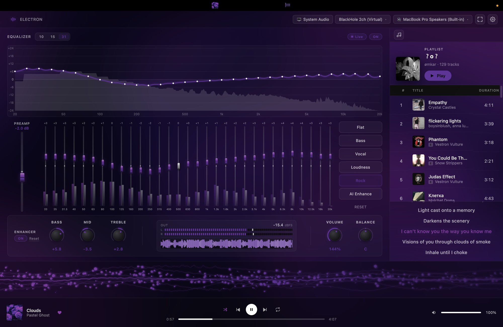

A system-wide 31-band EQ, a real-time visualizer, a Spotify control surface and a notch HUD — in one window that runs entirely on your machine.
Grab the arm64 build for Apple Silicon, x64 for Intel. Read the install steps first — the app is unsigned, and macOS needs one extra command.

Four tools that happen to share a window, because they all want the same audio stream.
Space plays and pauses, ← / → change track.No Homebrew, no Node, no build step. One download and one Terminal command.
Electron-x.y.z-arm64.dmg — Apple Silicon (M1, M2, M3, M4, M5…)Electron-x.y.z-x64.dmg — Intel MacsNot sure which you have? Open the Apple menu → About This Mac. Anything listing an "Apple M" chip is arm64.
Electron to your Downloads folder for now — not Applications yet. The next step is much easier from Downloads.
macOS will otherwise say "Electron is damaged and can't be opened." It isn't damaged — see below. Run these three lines in Terminal:
xattr -cr ~/Downloads/Electron.app
mv ~/Downloads/Electron.app /Applications/
open /Applications/Electron.appThat's the whole install.
The app is unsigned. Signing requires the Apple Developer Program at $99/year, which is hard to justify for a free tool. macOS attaches a quarantine flag to anything a browser downloads, and for unsigned apps it reports that as "damaged" rather than anything more useful.
xattr -cr removes the flag. Nothing else about the app changes, and you only do it once per install. If you'd rather not run the command, you can build from source instead — see below.
Then xattr will fail with Operation not permitted — recent macOS blocks Terminal from touching apps in /Applications. Move it out, fix it, move it back:
mv /Applications/Electron.app ~/Desktop/
xattr -cr ~/Desktop/Electron.app
mv ~/Desktop/Electron.app /Applications/Alternatively, grant Terminal permanent access under System Settings → Privacy & Security → App Management, restart Terminal, and run xattr -cr in place.
Three things to wire up. The visualizer works immediately; the EQ and Spotify need a moment.
macOS asks as you reach each feature — one click each. You can also grant them later under System Settings → Privacy & Security.
It's technically optional, but it's the only routing that makes Live mode work properly. Without it the processed audio gets re-captured by the OS and can feed back on itself.
BlackHole is a free virtual audio device. It lets the app capture system audio cleanly and send the processed signal back out to your speakers.
brew install blackhole-2chNo Homebrew? Download the installer from existential.audio/blackhole. Reboot once afterwards so macOS registers the driver.
Then set System Settings → Sound → Output to BlackHole 2ch. Your Mac goes silent — that's expected and correct. In the app's top bar:
Sound now flows through the app and the EQ'd result reaches your ears.
If the output device is also BlackHole, the signal loops back into itself. You'll get silence or a loud whine. The output must be a real device.
Free, about two minutes, and it never expires. You do this once per Mac.
http://127.0.0.1:8888/callback127.0.0.1, not localhost — Spotify dropped localhost in 2024.
A Spotify Premium account is needed for playback control — that's Spotify's own restriction on their API, not this app's.
Music controls that live in the notch, so you can change track without leaving what you're doing.
Move your cursor to the notch and a panel drops down with the album art, track and artist, the current lyric line, a scrubber you can click to seek, and transport controls. Click anywhere on it that isn't a button to bring the main window forward. Move away and it folds back up into the notch.
Idle, it shows only the album thumbnail and a few level bars, positioned either side of the camera so the notch itself hides the rest.
With the HUD on, the app runs from the menu bar only: no Dock icon, and no Cmd+Tab entry.
macOS will only let a window float above another app's fullscreen Space if the app is registered as a background accessory, and giving up the Dock icon is how an app declares that. Keep the Dock icon and the HUD simply stops existing the moment you switch to a fullscreen window — which is most of when you'd want it.
Use the menu bar icon to reopen the main window. Turning the HUD off under Settings → Notch HUD restores the Dock icon and Cmd+Tab immediately.
No notch on your Mac? The panel still works — it sits at the top centre of the display and sizes itself to your menu bar instead.
The app updates itself, and asks first every time.
It checks on launch and then hourly. When there's a new version you get three choices, and nothing downloads until you pick one:
| Choice | What happens |
|---|---|
| Install now | Downloads, verifies, swaps the app and relaunches it. |
| Install on quit | Downloads now, applies next time you close the app. Nothing more for you to do. |
| Skip this version | Stays skipped across relaunches. You'll be asked again at the next release. |
Because the app is unsigned, the swap can occasionally be refused by macOS. The app tells you when this happens and links to the release page. A failed update is always rolled back — you'll never be left without a working app.
To update by hand, download the new DMG and repeat the install steps. Your settings, EQ curves and Spotify sign-in are kept: they live in ~/Library/Application Support/Electron, separate from the app itself.
Drag the app to the Trash. To remove your settings too:
rm -rf ~/Library/Application\ Support/ElectronBlackHole is a separate install — remove it with brew uninstall blackhole-2ch, or its own uninstaller. Remember to set System Settings → Sound → Output back to your speakers.
Nearly every report is one of the first three.
Work down this list in order.
Classic feedback loop: the output and the input are the same device. If your source is BlackHole, set Output device to real speakers or headphones.
The chain is unity-gain by default, so 100% volume should match direct playback exactly. To go louder:
Modern pop and hip-hop is already mastered near 0 dBFS and will clip past roughly 150%. That's the digital ceiling, not a fault. Quiet classical, podcasts and older recordings take 200%+ happily.
Expected on first launch, and misleading — the app is unsigned, not damaged. Run xattr -cr on it while it's still in Downloads, then move it to Applications. Full commands are in Install.
Right-click → Open no longer works on macOS 15 and later. Use the command.
The app is already in /Applications, which recent macOS protects from Terminal. Move it to the Desktop, run xattr -cr there, move it back — the cleared flag travels with the file. Commands are in Install.
The Notch HUD is on. macOS requires background-accessory status for a window to float over fullscreen apps, and that means no Dock icon and no Cmd+Tab entry.
Reopen the window from the menu bar icon. To get the Dock icon back, turn off Settings → Notch HUD. More detail →
http://127.0.0.1:8888/callback — not localhost.macOS hides device names from apps without microphone permission, even when you only intend to use BlackHole. Allow it when prompted, or under System Settings → Privacy & Security → Microphone.
macOS is waiting on Screen Recording permission without saying so. Enable Electron under System Settings → Privacy & Security → Screen Recording, then try again.
It launched in the background. Use the menu bar icon, or Cmd+Tab. With the Notch HUD on there's no Dock icon or Cmd+Tab entry, so the menu bar icon is the way in.
Open an issue on GitHub with your macOS version, your Mac's chip, and what you expected to happen.
| Action | Result |
|---|---|
Space | Play / pause |
← / → | Previous / next track |
Esc | Clear the EQ band selection |
Cmd+Shift+P | Toggle the performance overlay |
| Click a band's frequency label | Add it to a multi-band selection |
| Drag across band labels | Range-select bands |
| Drag a selected band | Move every selected band by the same amount |
| Drag the response curve | Pan the frequency / dB window |
| Double-click the curve | Reset the pan |
| Shift + drag a knob | Fine adjustment |
| Double-click a knob | Reset to default |
| Right-click a track | Add to playlist, queue, or copy link |
An app you compile yourself isn't quarantined, so no xattr step.
git clone https://github.com/omkarxpatel/Electron.git
cd Electron
npm install
npm run dev # run it
npm run build # or build a DMG into release/Built on Electron 33, React 19, TypeScript and Vite, with the Web Audio API doing the signal work. macOS only — the capture chain uses ScreenCaptureKit and Core Audio, which have no portable equivalent.
MIT licensed. Issues and pull requests welcome on GitHub.